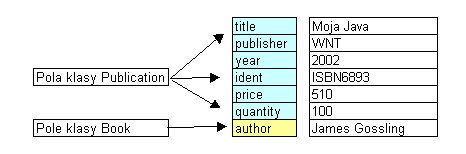
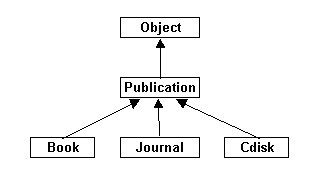

6. Pojêcie dziedziczenia
Zajmiemy siê teraz krótko pojêciem dziedziczenia. Pe³na dyskusja tej tematyki
przewidziana jest na drugi semestr, Tutaj zwrócimy uwagê na te elementy, które
bêd± nam potrzebne w najbli¿szych wykladach.
Dziedziczenie polega na przejêciu w³a¶ciwo¶ci i funkcjonalno¶ci
obiektów innej klasy i ewentualnej ich modyfikacji i/lub uzupelnieniu w taki sposób, by by³y
one bardziej wyspecjalizowane.
Omawiana wy¿ej klasa Publication opisuje w³a¶ciwo¶ci publikacji, które
kupuje i sprzedaje ksiêgarnia. Zauwa¿my, ¿e za pomoc± tej klasy nie mo¿emy
w pe³ni opisaæ ksi±¿ek. Ksi±¿ki s± szczego³n±, "wyspecjalizowan±" wersj±
publikacji, oprócz tytu³u, wydawcy, ceny itd - maj± jeszcze jedn± w³a¶ciwo¶æ
- autora (lub autorów). S³owo kluczowe extends s³u¿y do wyra¿enia relacji dziedziczenia jednej klasy przez drug±. Piszemy: class B extends A { ... } co oznacza, ¿e klasa B dziedziczy (rozszerza) klasê A. Mówimy:
Zapiszmy zatem:
public class Book extends Publication {
// definicja klasy Book
}
Co nale¿y podaæ w definicji nowej klasy?
class Book extends Publication {
private String author;
public String getAuthor() {
return author;
}
}
Czy to wystarczy?
Czyli konstruktor powinien mieæ postaæ:
public Book(String aut, String tit, String pub, int y, String id,
double price, int quant) {
....
}
Zwróæmy jednak uwagê: pola tytu³u, wydawcy, roku, identyfikatora, ceny i
ilo¶ci - s± prywatnymi polami klasy Publication. Z klasy Book nie mamy do
nich dostêpu. Jak je zainicjowac? Pola nadklasy (klasy bazowej) inicjujemy za pomoc± wywo³ania z konstruktora
klasy pochodnej konstruktora klasy bazowej (nadklasy)
U¿ycie w konstruktorze nastêpuj±cej konstrukcji sk³adniowej: super(lista_argumentów); oznacza wywo³anie konstruktora klasy bazowej z argumentami lista_argumentów . Je¶li wystêpuje - MUSI byæ pierwsz± instrukcj± konstruktora klasy pochodnej. Je¶li nie wystêpuje - przed utworzeniem obiektu klasy pochodnej zostanie wywo³any konstruktor bezparametrowy klasy bazowej.
Konstruktor klasy Book musi wiêc wywo³aæ konstruktor nadklasy, po to by zainicjowaæ
jej pola, a nastêpnie zainicjowaæ pole author.
// Konstruktor klasy Book
// argumenty: aut - autor, tit - tytu³, pub - wydawca, y - rok wydania
// id - ISBN, price - cena, quant - ilo¶æ
public Book(String aut, String tit, String pub, int y, String id,
double price, int quant) {
super(tit, pub, y, id, price, quant);
author = aut;
}
Teraz mo¿na podaæ ju¿ pe³n± definicjê klasy Book.
public class Book extends Publication {
private String author;
public Book(String aut, String tit, String pub, int y, String id,
double price, int quant) {
super(tit, pub, y, id, price, quant);
author = aut;
}
public String getAuthor() {
return author;
}
}
Zwróæmy uwagê: wykorzystanie klasy Publication (poprzez jej odziedziczenie)
oszczêdzi³o nam wiele pracy. Nie musieli¶my ponownie definiowaæ pól i metod
z klasy Publication w klasie Book.
Book b = new Book("James Gossling", "Moja Java", "WNT", 2002,
"ISBN6893", 51.0, 0);
Ten obiekt zawiera:

Podkre¶lmy: jest to jeden obiekt klasy Book. Ale poniewa¿ klasa Book dziedziczy klasê Publication to obiekty klasy Book
maj± równie¿ wszelkie w³a¶ciwo¶ci obiektów klasy Publication , a zatem mo¿emy
na ich rzecz u¿ywaæ równie¿ metod zdefiniowanych w klasie Publication.
Nic zatem nie stoi na przeszkodzie, by napisaæ taki program:
class TestBook {
public static void main(String[] args) {
Book b = new Book("James Gossling", "Moja Java", "WNT", 2002,
"ISBN6893", 51.0, 0);
int n = 100;
b.buy(n);
double koszt = n * b.getPrice();
System.out.println("Na zakup " + n + " ksi±¿ek:");
System.out.println(b.getAuthor());
System.out.println(b.getTitle());
System.out.println(b.getPublisher());
System.out.println(b.getYear());
System.out.println(b.getIdent());
System.out.println("---------------\nwydano: " + koszt);
b.sell(90);
System.out.println("---------------");
System.out.println("Po sprzeda¿y zosta³o " + b.getQuantity() + " pozycji");
}
}
Na zakup 100 ksi±¿ek:
James Gossling Moja Java WNT 2002 ISBN6893 --------------- wydano: 5100.0 --------------- Po sprzeda¿y zosta³o 10 pozycji który skompiluje siê i wykona poprawnie daj±c w wyniku pokazany listing. Mo¿emy powiedzieæ, ¿e obiekty klasy Book s± równie¿ obiektami klasy Publication
(w tym sensie, ¿e maj± wszelkie w³a¶ciwo¶ci obiektów klasy Publication)
Dziêki temu referencje do obiektów klasy Book mo¿emy przypisywaæ zmiennym,
oznaczaj±cym obiekty klasy Publication (zawieraj±cym referencje do obiektów
klasy Publication). Np. Nieco mniej precyzyjnie, ale za to podkre¶laj±c, ¿e chodzi o operowanie
na obiektach, bêdziemy mówiæ o takich konwersjach jako o obiektowych konwersjach rozszerzaj±cych (ang. "upcasting" - up - bo w górê hierarchii dziedziczenia).
Obiektowe konwersje rozszerzaj±ce dokonywane s± automatycznie przy:
Ta zdolno¶æ obiektów Javy do "stawania siê" obiektem swojej nadklasy jest nies³ychanie u¿yteczna.
public double incomeDiff(Publication p1, Publication p2) {
double income1 = p1.getQuantity() * p1.getPrice();
double income2 = p2.getQuantity() * p2.getPrice();
return income1 - income2;
}
i wywo³ywaæ j± dla dowolnych (ró¿nych rodzajów) par publikacji Book b1 = new Book(...); Book b2 = new Book(...); Journal j = new Journal(...); CDisk cd1 = new CDisk(...); CDisk cd2 = new CDisk(...); double diff = 0; diff = incomeDiff(b1, b2); diff = incomeDifg(b1, j); diff = inocmeDiff(cd1, b1);
Gdyby nie by³o obiektowych konwersji rozszerzaj±cych, to dla ka¿dej mozliwej
kombinacji "rodzajowej" par - musieliby¶my napisaæ inn± metodê incomeDiff
np. W Javie ka¿da klasa mo¿e bezpo¶rednio odziedziczyæ tylko jedn± klasê.
Ale po¶rednio mo¿e mieæ dowolnie wiele nadklas, co wynika z hierarchii dziedziczenia. Ta hierarchia zawsze zaczyna siê na klasie Object (której definicja znajduje siê w zestawie stanardowych klas Javy). Zatem w Javie wszystkie klasy pochodz± po¶rednio od klasy Object. Je¶li definiuj±c klasê nie u¿yjemy s³owa extends (nie za¿±damy jawnie dziedziczenia), to i tak nasza klasa domy¶lnie bêdzie dziedziczyæ klasê Object (tak jakby¶my napisali class A extends Object).
Wobec tego hierarchia dziedziczenia omawianych tu klas wygl±da nastêpuj±co:

Z tego wynika, ¿e:
referencjê do obiektu dowolnej klasy mo¿na przypisaæ zmiennej typu Object (zawieraj±cej referencjê do obiektu klasy Object). Z w³a¶ciwo¶ci tej korzysta wiele "narzêdziowych" metod zawartych w klasach standardu Javy.
|